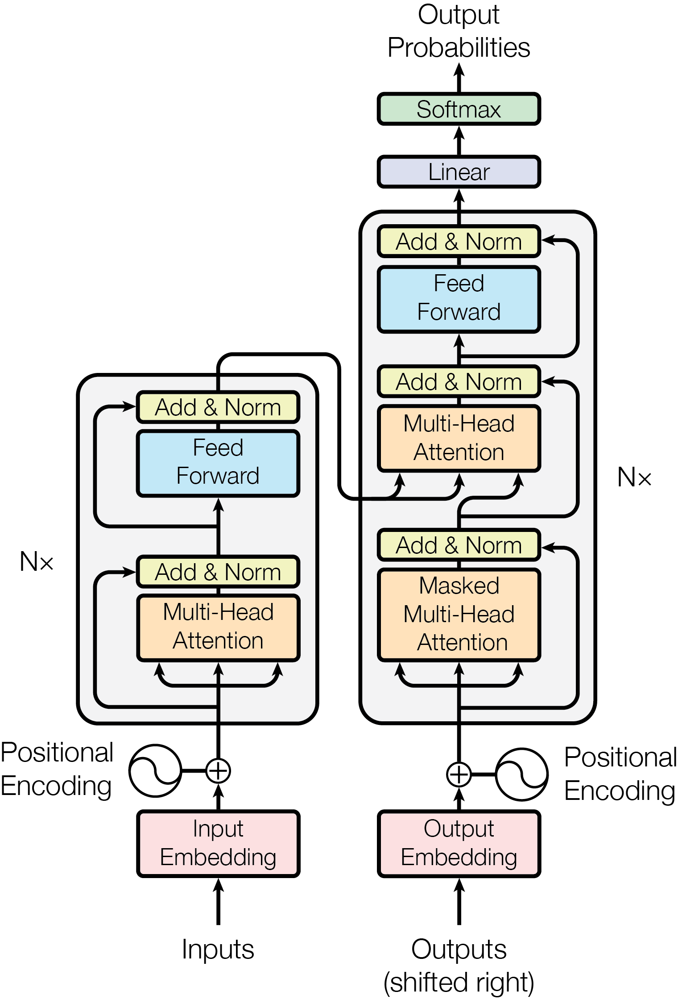
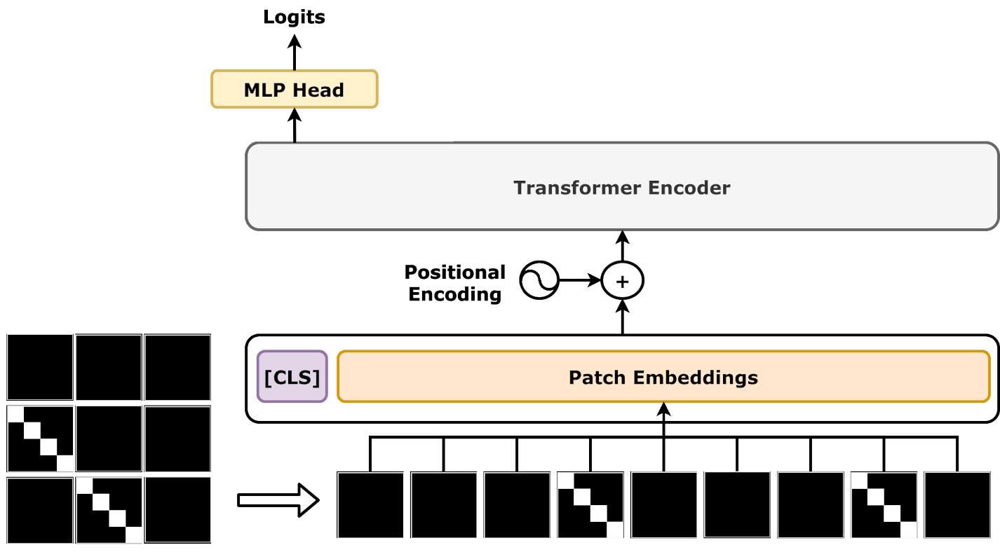
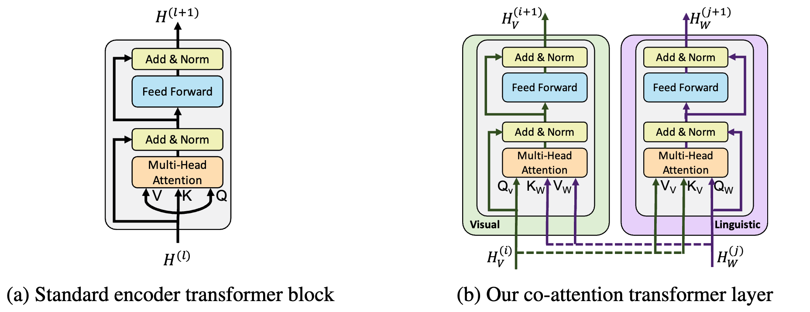
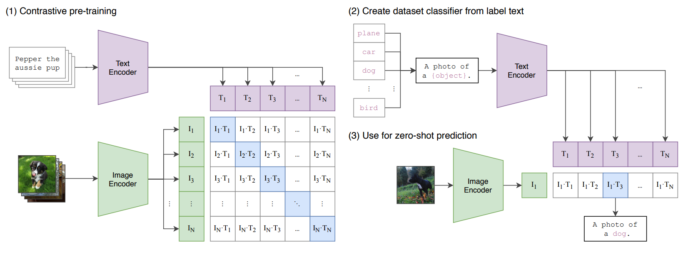

Program Studi Teknik Informatika
Fakultas Teknologi Industri
Institut Teknologi Sumatera (ITERA) wayan.wisesa@if.itera.ac.id
Tujuan Pembelajaran Sesi Ini
Di akhir sesi ini, mahasiswa diharapkan mampu:
01
Encoder–Decoder
Menjelaskan arsitektur dasar Transformer dan alasan ia lebih efektif daripada RNN untuk sekuens.
02
Vision Transformer
Menjelaskan bagaimana ViT mengadaptasi Transformer untuk gambar dengan memperlakukan gambar sebagai sekuens patch.
03
Multimodal Transformer
Menganalisis arsitektur ViLBERT, LXMERT, dan CLIP serta peran cross-attention di dalamnya.
04
Pra-latih Lintas Modal
Mengidentifikasi manfaat dan tantangan cross-modal pre-training pada skala data besar.
Bagian 1
Dari Attention ke Arsitektur
Menyusun mekanisme penyejajaran dari Pertemuan 7 menjadi blok bangunan arsitektur yang utuh.
Rekap: Tiga Peran Attention
Mekanismenya sudah kita bahas; sekarang kita lihat perannya di dalam arsitektur.
Self-Attention
Menghubungkan token di dalam satu modalitas. Menjadi sumber contextual embedding — makna sebuah token ditentukan oleh konteksnya.
Cross-Attention
Menghubungkan token antar modalitas: query dari satu sisi, key dan value dari sisi lain. Inilah sambungan yang membuat arsitektur menjadi multimodal.
Multi-Head
Menjalankan beberapa attention secara paralel sehingga model dapat mempelajari beberapa jenis relasi sekaligus — sintaksis, posisi, maupun korespondensi lintas modal.
lightbulb
Rangkaian sesi ini sederhana: satu blok attention → tumpukan encoder–decoder → gambar sebagai sekuens → beberapa modalitas sekaligus. Setiap langkah menambah satu gagasan baru saja.
Transformer Encoder–Decoder
Diperkenalkan lewat “Attention Is All You Need” (2017) untuk penerjemahan mesin.

Sumber: Vaswani dkk. (2017), Attention Is All You Need
01. Encoder Membaca seluruh sekuens sekaligus lalu menghasilkan representasi kontekstual yang kaya.
02. Decoder Menghasilkan output token demi token; masked self-attention mencegahnya mengintip token yang belum dihasilkan.
03. Cross-Attention Jembatan dari encoder ke decoder — titik yang nanti kita pakai untuk menyambung antar modalitas.
Mengapa Transformer Cocok untuk Multimodal?
Tiga sifat yang membuatnya menjadi tulang punggung model multimodal modern.
Ketergantungan Jarak Jauh
Satu langkah attention menghubungkan token berapa pun jaraknya. RNN harus menempuh sekuens secara bertahap, sehingga sinyal melemah.
Fleksibilitas Cross-Attention
Satu mekanisme yang sama dapat menyambungkan modalitas apa pun, asalkan semuanya sudah menjadi sekuens vektor.
Skalabilitas
Pelatihan paralel dan arsitektur seragam membuat model dapat diperbesar bersama data dalam jumlah besar.
lightbulb
Kunci penyatunya: apa pun modalitasnya, Transformer hanya menerima sekuens vektor. Tugas perancang adalah mengubah setiap modalitas menjadi sekuens semacam itu.
Bagian 2
Vision Transformer: Gambar sebagai Sekuens
Membuang konvolusi, menggantinya dengan patch — dan mengapa itu berhasil.
ViT: Memperlakukan Gambar sebagai Sekuens Patch
Vision Transformer (2020) memotong gambar menjadi potongan tetap.

Sumber: Dosovitskiy dkk. (2021), An Image is Worth 16×16 Words
01. Patching Gambar dipotong menjadi patch berukuran tetap (mis. 16×16 piksel), lalu tiap patch diratakan menjadi vektor.
02. Proyeksi + Posisi Tiap vektor diproyeksikan ke dimensi embedding, lalu ditambah embedding posisi agar urutan ruang tidak hilang.
03. Encoder Sekuens embedding masuk ke Transformer Encoder biasa — sama persis seperti pada teks.
ViT dan CNN: Perbedaan Asumsi
Pertukarannya bukan sekadar soal akurasi, melainkan soal asumsi bawaan dan kebutuhan data.
Aspek
CNN
Vision Transformer
Asumsi bawaan
Terikat pada kisi piksel: locality dan translation equivariance sudah tertanam.
Tidak ada asumsi lokal; setiap patch dapat berhubungan dengan patch mana pun sejak lapisan pertama.
Cakupan hubungan
Reseptif field bertambah perlahan; butuh banyak lapisan untuk menghubungkan bagian jauh.
Ketergantungan global tercapai dalam satu langkah self-attention.
Kebutuhan data
Bekerja baik pada dataset sedang karena asumsi lokalnya berfungsi sebagai prior.
Butuh data besar atau pre-training; pada dataset kecil cenderung kalah dari CNN.
Biaya komputasi
Kenaikan biaya mengikuti ukuran kernel dan kedalaman.
Biaya self-attention naik kuadratik terhadap jumlah patch.
Bagian 3
Multimodal Transformer
Ketika satu arsitektur harus menampung beberapa modalitas sekaligus.
Tantangan Ketika Modalitas Berbeda Harus Bertemu
Transformer menuntut format yang seragam; kenyataannya setiap modalitas punya bentuk berbeda.
Representasi Heterogen
Piksel, token kata, dan sampel audio memiliki satuan yang berbeda. Solusinya: encoder unimodal khusus yang mengubah setiap modalitas menjadi sekuens vektor.
Penyejajaran & Fusi
Setelah formatnya seragam, bagian mana yang bersesuaian dan bagaimana digabung? Solusinya: cross-attention.
Skalabilitas
Melatih model multimodal menuntut data berpasangan dan komputasi yang jauh lebih besar daripada model unimodal.
lightbulb
Perhatikan bahwa dua dari tiga tantangan sudah punya jawaban di arsitektur: encoder unimodal menyelesaikan heterogenitas, cross-attention menyelesaikan penyejajaran. Yang tersisa — skalabilitas — diselesaikan lewat strategi pra-latih, bukan lewat arsitektur.
Tiga Pola Arsitektur Multimodal Transformer
Kebanyakan model besar dapat dipetakan ke salah satu dari tiga pola berikut.
Dual-Stream
Dua jalur terpisah yang bertukar informasi lewat co-attention. Setiap modalitas mempertahankan representasinya sendiri. Contoh: ViLBERT.
Multi-Encoder
Encoder unimodal untuk tiap modalitas, lalu satu encoder lintas modal yang menggabungkannya. Contoh: LXMERT.
Dual-Encoder
Dua encoder yang tidak pernah bertemu; keselarasan dibangun di ruang embedding lewat contrastive learning. Contoh: CLIP.
lightbulb
Bedanya terletak pada di mana modalitas bertemu: di dalam lapisan (dual-stream), di lapisan khusus (multi-encoder), atau tidak bertemu sama sekali — hanya embedding-nya dipertemukan (dual-encoder).
ViLBERT: Dua Jalur yang Bertukar Informasi
Arsitektur dual-stream: dua jalur yang bertukar informasi.

Sumber: Lu dkk. (2019), ViLBERT (NeurIPS)
01. Dua Jalur Gambar dan teks diproses oleh jalur Transformer yang terpisah, masing-masing dengan encoder unimodalnya.
02. Co-Attention Tiap beberapa lapisan, kedua jalur bertukar informasi dua arah — visual memakai teks sebagai konteks, dan sebaliknya.
03. Hasil Representasi gabungan dipakai untuk tugas vision-and-language, mis. menjawab pertanyaan tentang gambar.
LXMERT: Tiga Encoder untuk Satu Titik Temu
Pola multi-encoder: dua encoder unimodal, lalu satu encoder lintas modal.
Sumber: Tan & Bansal (2019), LXMERT (EMNLP)
01. Dua Encoder Terpisah Teks diolah text encoder (BERT, 9 lapis); gambar oleh visual encoder (5 lapis) — masih mandiri.
02. Satu Encoder Lintas Modal Keluaran keduanya digabung ke satu cross-modality encoder (5 lapis) berisi cross-attention dua arah.
03. Interaksi Dipusatkan Pertukaran informasi dipusatkan di satu blok, bukan disebar ke dua jalur penuh — sangat kuat untuk VQA.
CLIP: Menyelaraskan Tanpa Pernah Menyatukan
Dua encoder terpisah yang dilatih agar pasangan benar berdekatan.

Sumber: Radford dkk. (2021), Learning Transferable Visual Models From Natural Language Supervision
01. Dua Encoder Gambar dan teks melewati encoder yang benar-benar terpisah; tidak ada lapisan yang dibagi.
02. Ruang Bersama Keduanya diproyeksikan ke ruang vektor yang sama, sehingga jarak antar vektor punya makna.
03. Kontrastif Pasangan benar didekatkan, pasangan salah dijauhkan — dilatih pada 400 juta pasangan gambar–teks.
ViLBERT, LXMERT, CLIP: Satu Tabel Perbandingan
Tiga model, tiga jawaban berbeda atas pertanyaan “di mana modalitas bertemu”.
Aspek
ViLBERT (2019)
LXMERT (2019)
CLIP (2021)
Tempat bertemu
Co-attention di dalam dua jalur paralel.
Satu encoder lintas modal setelah dua encoder unimodal.
Tidak bertemu — hanya di ruang embedding.
Masukan visual
Fitur region (Faster R-CNN).
Fitur region (Faster R-CNN).
Piksel mentah lewat ViT atau ResNet.
Tugas pra-latih
MLM + MRM, serta prediksi kesesuaian.
MLM + MRM + image-text matching.
Contrastive murni pada 400 juta pasangan.
Kekuatan utama
Penalaran visual-linguistik yang halus.
Sangat kuat untuk VQA.
Zero-shot dan pencarian lintas modal berskala besar.
Tugas Pra-latih Lintas Modal
Tiga jenis tujuan yang biasa dipakai untuk melatih interaksi antar modalitas.
MLM + MRM
Masked Language Modeling + Masked Region Modeling: menutup sebagian kata dan sebagian region gambar, lalu memintanya ditebak. Dipakai ViLBERT dan LXMERT.
Image-Text Matching
Memprediksi apakah sebuah gambar dan sebuah teks benar-benar berpasangan. Melatih model membedakan pasangan yang cocok dari yang tidak.
Contrastive
Mendekatkan pasangan benar dan menjauhkan pasangan salah di ruang embedding. Dipakai CLIP; paling sederhana, paling mudah diskalakan.
lightbulb
Perhatikan gradasi biayanya: contrastive hanya butuh embedding, matching butuh satu lapisan keputusan, sedangkan MLM + MRM butuh interaksi penuh antar modalitas. Semakin dalam interaksinya, semakin mahal — tetapi semakin halus penalaran yang dipelajari.
Rumus Inti: InfoNCE
Tujuan kontrastif yang dipakai CLIP, dirumuskan sebagai klasifikasi atas seluruh kandidat dalam satu batch.
\(\mathrm{sim}(\mathbf{v}_I, \mathbf{v}_T)\) Kesamaan kosinus antara vektor gambar dan vektor teks. Nilai besar berarti keduanya dianggap cocok.
\(\tau\) Suhu (temperature). Nilai kecil membuat distribusi lebih tajam, sehingga model lebih tegas membedakan kandidat.
Penyebut Jumlah atas seluruh kandidat \(N\) dalam batch — termasuk pasangan benar (\(+\)) dan semua pasangan salah.
Bagian 4
Studi Kasus: Pencarian Visual Tanpa Data Latih
Menerapkan model pra-latih pada tugas nyata — lalu menilai batas kemampuannya.
Studi Kasus: Rumusan Masalah
Sebuah toko daring ingin menambahkan pencarian visual dari deskripsi.
Tugas
Katalog berisi ratusan ribu foto produk, masing-masing hanya berjudul pendek tanpa anotasi region.
Deskripsi pelanggan bebas dan sering tidak memakai kata yang sama dengan judul.
Tidak tersedia data pasangan gambar–teks berlabel untuk melatih ulang model.
Kendala Nyata
Latensi pencarian harus di bawah satu detik untuk ratusan ribu kandidat.
Biaya komputasi dibatasi; tidak ada GPU untuk menyaring interaksi per pasangan.
Katalog berubah tiap hari, sehingga indeks harus dapat diperbarui cepat.
help
Tiga pertanyaan sebelum menulis kode — diskusikan 3 menit dengan rekan di samping Anda: (1) pola arsitektur mana yang sesuai dengan kendala latensi dan pembaruan indeks? (2) mengapa pola lain tidak cocok? (3) metrik apa yang paling tepat?
Studi Kasus: Penerapan
Rancangan yang dipilih: dual-encoder pra-latih dengan tujuan kontrastif, dipakai tanpa pelatihan ulang.
1
Indekskan Katalog
Setiap foto produk dilewatkan encoder gambar sekali, hasilnya disimpan sebagai indeks vektor.
2
Encode Kueri
Deskripsi pelanggan dilewatkan encoder teks menjadi satu vektor pada ruang yang sama.
3
Cari Tetangga Terdekat
Kesamaan kosinus dihitung terhadap indeks — operasi vektor yang sangat murah.
4
Peringkatkan
Kandidat teratas dikembalikan; ambang kesamaan menyaring hasil yang tidak relevan.
lightbulb
Mengapa rancangan ini bekerja: karena tidak ada interaksi antar modalitas, embedding katalog dapat dihitung sekali di muka dan disimpan. Kueri baru hanya membutuhkan satu penerusan encoder teks, bukan ratusan ribu perbandingan penuh.
Studi Kasus: Analisis Pilihan
Apakah rancangan itu benar-benar memenuhi kendala? Mari uji terhadap tiga tuntutan tadi.
Tuntutan
Dual-Encoder (dipilih)
Dual-Stream / Multi-Encoder
Latensi < 1 detik
Terpenuhi: satu penerusan teks + pencarian vektor.
Tidak terpenuhi: interaksi per pasangan kandidat.
Indeks cepat diperbarui
Terpenuhi: menambah produk berarti menambah satu vektor.
Sulit: setiap perubahan memengaruhi lapisan interaksi.
Tanpa data berlabel
Terpenuhi: memakai model pra-latih apa adanya.
Terpenuhi, tetapi pra-latih jenis ini jauh lebih mahal.
Penalaran halus
Terbatas: lemah pada relasi komposisional dan atribut yang saling menempel.
Lebih kuat: dapat menimbang bagian gambar terhadap bagian kalimat.
warning
Batas yang harus diakui: dual-encoder unggul pada tiga tuntutan pertama, tetapi kalah pada penalaran halus. Kueri seperti “sepatu biru di sebelah kiri tas merah” mudah keliru karena relasi antar objek tidak dimodelkan secara eksplisit.
Ketika Transformer Multimodal Tidak Membantu
Mengenal mode kegagalan lebih berguna daripada hanya mengagumi keberhasilannya.
Kelangkaan Data Berpasangan
Pra-latih kontrastif membutuhkan pasangan dalam jumlah besar. Pada domain khusus dengan ribuan contoh, representasi yang dipelajari terlalu dangkal dan kalah dari fitur tangan.
Biaya Kuadratik
Self-attention tumbuh kuadratik terhadap jumlah token. Modalitas beresolusi tinggi — video, audio panjang, citra medis — cepat melampaui anggaran komputasi.
Relasi Komposisional
Menyelaraskan seluruh gambar dengan seluruh kalimat tidak menangkap relasi antar bagian. Negasi, urutan, dan penempelan atribut sering gagal.
warning
Pemeriksaan sebelum memakai model pra-latih: apakah pasangan datanya cukup banyak, apakah jumlah tokennya masih wajar, dan apakah tugasnya butuh relasi antar bagian? Jika salah satu jawabannya “tidak”, arsitektur yang lebih sederhana atau penyelarasan eksplisit dari Pertemuan 7 mungkin lebih tepat.
Latihan Terbimbing: Zero-Shot CLIP
Memakai model multimodal pra-latih untuk mengklasifikasi gambar tanpa melatih apa pun.
1
Muat Model
Muat CLIPModel dan CLIPProcessor pra-latih dari Hugging Face.
2
Susun Kandidat
Pasangkan satu gambar dengan beberapa kalimat label berbahasa Indonesia.
3
Hitung Kemiripan
Ubah logits per gambar menjadi probabilitas lewat softmax.
4
Uji & Analisis
Bandingkan dengan label sebenarnya, lalu uji satu kueri komposisional yang seharusnya gagal.
lightbulb
Seluruh latihan berjalan pada tahap inferensi — tidak ada pelatihan ulang. Langkah keempat sengaja meminta Anda mencari kegagalan, bukan hanya keberhasilan.
Benang merah dari satu blok attention hingga arsitektur multimodal pra-latih:
Dari Blok ke Arsitektur
Encoder–decoder → menggantikan RNN dengan attention; cross-attention menjadi jembatan antar blok.
ViT → gambar dipotong menjadi patch, diproyeksikan, ditambah embedding posisi, lalu masuk encoder biasa.
Kunci penyatu → apa pun modalitasnya, masukannya harus berupa sekuens vektor.
Tiga Pola & Batasnya
Dual-stream (ViLBERT) → interaksi di dalam lapisan lewat co-attention.
Multi-encoder (LXMERT) → satu encoder khusus untuk interaksi lintas modal.
Dual-encoder (CLIP) → modalitas hanya bertemu di ruang embedding; dilatih dengan tujuan kontrastif InfoNCE.
Keterbatasan → data langka, biaya kuadratik, dan relasi komposisional.
Diskusi Kelas
Diskusikan bersama rekan di samping Anda selama 3–5 menit:
help
Pertanyaan 1: Jika katalog Anda hanya berisi lima ribu produk, apakah dual-encoder pra-latih masih pilihan terbaik — atau justru fitur tangan lebih unggul?
help
Pertanyaan 2: Bagaimana Anda akan mendeteksi bahwa kegagalan model disebabkan oleh relasi komposisional, bukan sekadar data yang kurang?
help
Pertanyaan 3: Untuk modalitas audio–visual, apakah pola dual-encoder tetap masuk akal, atau justru cross-attention dari Pertemuan 7 yang lebih tepat? Jelaskan dasar pilihan Anda.
Referensi & Bacaan Lanjutan
Rekomendasi literatur akademik wajib dan bacaan lanjutan:
[1]
Vaswani, A., et al. (2017).
Attention Is All You Need. NeurIPS. — arsitektur encoder–decoder yang menjadi dasar seluruh sesi ini.
[2]
Dosovitskiy, A., et al. (2021).
An Image is Worth 16×16 Words: Transformers for Image Recognition at Scale. ICLR. — sumber Vision Transformer (ViT).
[3]
Lu, J., et al. (2019).
ViLBERT: Pretraining Task-Agnostic Visiolinguistic Representations for Vision-and-Language Tasks. NeurIPS. — pola dual-stream dengan co-attention.
[4]
Tan, H., & Bansal, M. (2019).
LXMERT: Learning Cross-Modality Encoder Representations from Transformers. EMNLP. — pola multi-encoder dengan encoder lintas modal.
[5]
Radford, A., et al. (2021).
Learning Transferable Visual Models From Natural Language Supervision. ICML. — sumber CLIP dan tujuan kontrastif InfoNCE.

![Arsitektur LXMERT dari makalah aslinya: gambar (kiri atas) diolah Faster R-CNN menjadi region beserta fitur posisi (RoI Feat, Pos Feat), dan teks di kiri bawah menjadi word embedding dan indeks; kedua aliran masuk ke Object-Relationship Encoder dan Language Encoder yang masing-masing bertumpuk N kali (blok Self dan FF); kedua keluarannya bertemu di Cross-Modality Encoder bertumpuk N kali yang memuat blok Cross berisi cross-attention dua arah, lalu Self dan FF; arsitektur ini menghasilkan tiga aliran keluaran: Vision Output, Cross-Modality Output, dan Language Output](assets/data/lxmert-arch.webp) Sumber: Tan & Bansal (2019), LXMERT (EMNLP)
Sumber: Tan & Bansal (2019), LXMERT (EMNLP)